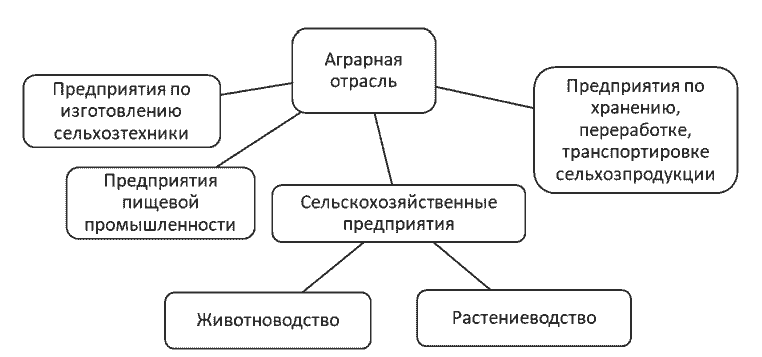

В статье акцентируется внимание на важности цифровизации аграрной отрасли и внедрение современных информационных систем в растениеводство. Определены проблемы в системах учета данных и предложены пути их решения. Проведен сравнительный анализ мобильных приложений учета сельскохозяйственных данных в сфере растениеводства.
цифровизация, аграрная отрасль, растениеводство, учет данных, эффективность ресурсов, прогнозирование урожая, сельское хозяйство, мобильное приложение.
J.A. Liashenko1, E.A. Shumaeva2
1,2Donetsk National Technical University, Russian Federation
The article emphasizes the importance of digitizing the agricultural sector and implementing modern information systems in crop production. Problems in data accounting systems are identified, and solutions to address them are proposed. A comparative analysis of mobile applications for agricultural data accounting in crop production is conducted.
digitization, agricultural industry, crop farming, data management, resource efficiency, crop forecasting, agriculture, mobile application.
В современном мире, сталкиваясь с вызовами изменения климата, ростом населения и нестабильностью рынков, аграрная отрасль становится критически важной для обеспечения продовольственной безопасности и устойчивого развития каждого государства. В этом контексте вопрос цифровизации аграрного сектора приобретает важное значение, предоставляя возможности интеграции современных технологий в сельское хозяйство.
Состояние аграрной отрасли не только касается интересов отдельных стран, но и представляет собой глобальную проблему. Недостаток продовольствия может стать источником конфликтов и угрозы мировой стабильности. Внедрение роботизации становится частью общего стремления к обеспечению устойчивого и безопасного продовольственного обеспечения на мировом уровне.
Множество исследователей и экспертов в области аграрной отрасли и цифровых технологий занимались проблематикой внедрения роботизации и автоматизации в сельском хозяйстве. Так, Ковалёв И.Л. и Костомахин М.Н рассматривают технические и технологические аспекты внедрения современных подходов в обслуживании и ремонте сельскохозяйственной техники [1]. Вопросам внедрения информационных технологий для повышения эффективности агропроизводства посвящены труда Чечеткина С.А. [2]. Ситников Д.В. рассматривает принципы внедрения информационных технологий в сельском хозяйстве и рассматривает перспективы развития данной [3]. Карташов В.А. проводит анализ текущего состояния информатизации в сельском хозяйстве и изучает возможные перспективы развития этой области [4]. Вопросы влияния цифровых технологий на повышение эффективности и устойчивости сельского хозяйства в свое работе затрагивает Буклагин Д.С. [5]. Мельникова К.М. описывает процесс цифровизации сельского хозяйства, выделяет ключевые направления цифровой трансформации, преимущества использования инновационных разработок [6]. Процессы цифровизации отечественного сельского хозяйства, основные тренды, специфика представленных на рынке решений, перспективы развития технологий, проблемы государственного регулирования отрасли и разбор примеров конкретных решений рассматривают Годин В.В., Белоусова М.Н., Белоусов В.А., Терехова А.Е. [7].
Цель исследования − определение направлений цифровизации аграрной отрасли.
Цифровизация способна революционизировать процессы производства, оптимизируя использование ресурсов и снижая затраты. Сельскохозяйственные предприятия могут использовать сенсоры, дроны, искусственный интеллект и другие технологии для мониторинга почвенных условий, управления поливом, и повышения урожайности.
В условиях ограниченности природных ресурсов, цифровизация позволяет более эффективно использовать землю, воду и энергию. Технологии предоставляют возможность точного земледелия, оптимального расхода удобрений и пестицидов, что способствует устойчивому сельскому хозяйству.
Аграрная отрасль сталкивается с вызовами изменения климата, такими как экстремальные погодные условия и изменение сезонов. Цифровые технологии позволяют адаптироваться к этим изменениям, предоставляя точные данные для более эффективного управления рисками и адаптации к новым климатическим условиям.
Компьютеризация также может содействовать повышению качества сельскохозяйственной продукции. Отслеживание производственных процессов от фермы до потребителя с использованием цифровых систем помогает обеспечить безопасность пищи и улучшить прозрачность цепочки поставок.
Цифровые инновации способны привнести новые возможности для развития сельских территорий. Создание цифровых площадок для продажи сельскохозяйственной продукции, обучение фермеров с использованием онлайн-ресурсов, и создание цифровой инфраструктуры способствует внедрению современных технологий в сельском хозяйстве.
Аграрная отрасль − это система отраслей экономики, связанных с производством продуктов питания и сырья для их производства и включает в себя различные секторы [8]. На рис. 1 представлены основные секторы аграрной отрасли.

Растениеводство играет критическую роль в обеспечении продовольственной безопасности, так как предоставляет основные ресурсы для пищи и кормового сырья. Однако, в контексте современных вызовов и требований, существует проблема эффективного учета в растениеводстве. Это включает в себя не только учет производственных процессов, но и более глубокие аспекты, такие как управление ресурсами, прогнозирование урожаев, и обеспечение качества продукции.
До сих пор учет данных для небольших предприятий, занимающихся выращиванием культур, часто осуществляется вручную, используя традиционные методы и инструменты, а именно:
Небольшие аграрные предприятия в некоторых случаях могут предпочитать традиционные методы ведения учёта из-за ограниченных ресурсов или из-за особенностей их специфики, которая может требовать более простых и доступных способов управления данными. Это обусловлено отсутствием доступа к современным технологиям, включая отсутствие удобного приложения для учета данных и прогнозирования будущих показателей.
Проблемы учета в растениеводстве сегодня становятся преградой для эффективного управления производственными процессами, ресурсами и обеспечения высокого качества продукции, так как недостаточный учет использования воды, удобрений и других ресурсов может привести к избыточным затратам и негативному воздействию на окружающую среду.
Недостаточная точность в прогнозировании урожая может создать проблемы в планировании сбора и хранения продукции. Учет факторов, влияющих на рост растений, таких как климатические условия и почвенные характеристики, является ключевым направлением для оптимизации производства, а современные технологии предоставляют инновационные решения в данной сфере. Среди них:
Отличительная особенность создания информационных систем у данной системы является то, что пользователь не всегда имеет возможность находится у стационарного компьютера. В связи с этим возникает потребность в мобильных приложениях, которые обеспечивают возможность онлайн-доступа к учетной системе.
Очень важным аспектом является требование к возможности мобильного использования компьютеризированной системы учета, чтобы данные можно было отслеживать и вносить изменения в учет развития культуры, находясь непосредственно в поле.
В настоящее время существует ряд мобильных приложений, которые оказывают помощь предпринимателям в реализации продукции их сельскохозяйственной деятельности, а именно: Agrobase, Agroresult, FarmDok, Caynax Gardener, Fermable, 365Crop, Protector Scouting, Filedmargin, FarmerJoe, AgroIntegratorApp и OneSoil Scouting. Из них функционируют на территории Российской Федерации и поддерживают русский язык только AgroIntegratorApp и OneSoil Scouting, сравнительный анализ которых приведен в табл. 1.
В контексте существующих приложений и спецификой российской аграрной отрасли возникает необходимость разработки более удобного и функционального инструмента для агрария. Это должна быть программная система, позволяющая обеспечить хранение, обработку информации и предоставление рекомендаций на основании истории данных о полях.
| Название мобильного приложения | Достоинства | Недостатки |
|---|---|---|
| AgroIntegratorApp |
|
|
| OneSoil Scouting |
|
|
Предлагаемое мобильное приложение должно реализовывать функционал представленный ниже.
Разработка приложения включает в себя создание удобного интерфейса, позволяющего пользователю легко вносить, просматривать и анализировать данные о полях, культурах, погоде, урожайности и других факторах, влияющих на сельскохозяйственную деятельность.
Для предпринимателя-растениевода это позволяет не только более эффективно управлять текущей деятельностью, но и разрабатывать перспективные стратегий. Точные данные, оптимизация ресурсов, увеличение производительности и сокращение рисков становятся реальностью благодаря информатизации учета.
Таким образом, информатизация учета в растениеводстве представляет собой ключевой инструмент для современных предпринимателей в аграрной отрасли. Столкновение с вызовами сельского хозяйства, такими, как управление ресурсами, прогнозирование урожаев и обеспечение качества продукции выдвигает потребность в эффективных решениях. Внедрение цифровых технологий, сенсоров, систем искусственного интеллекта и приложений для учета данных о полях становится решением этих проблем.
Учет информации о растениеводстве, осуществляемый с применением современных технологий и приложений, становится ключевым фактором для экономистов и менеджеров в принятии перспективных решений, способствуя развитию эффективного, устойчивого и конкурентоспособного сельского хозяйства.